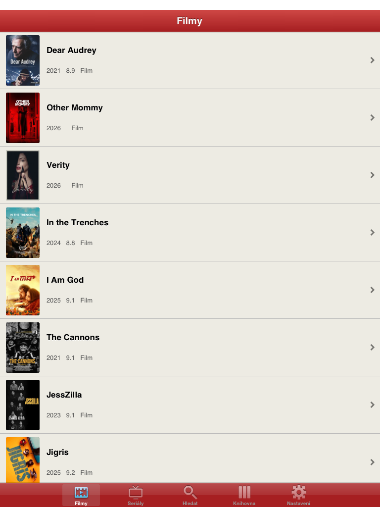
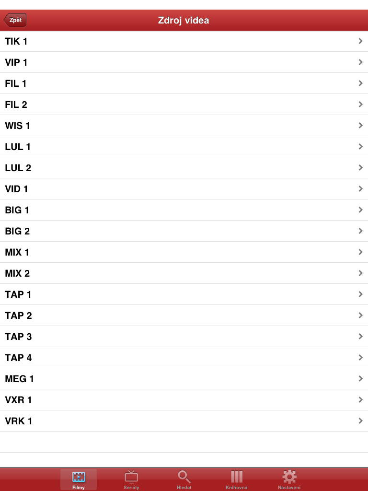

Vidbox
Movies and TV series in a native iOS 6 interface
Movies and TV series in a native iOS 6 interface
An unofficial native Vidbox client for iPhone and iPad. Browse movies and TV series, search titles, choose episodes and play compatible videos in the system player. Its own HTTPS layer and WebP decoder connect classic iOS to the current website without an author-operated helper server.


Unofficial apps by samcejko, not affiliated with or endorsed by Twitch, Google, Apple, TikTok, Instagram, Meta, Spotify, Kick, NVIDIA, Mojang, Microsoft, OpenRouter, Vine, X, diVine or the Moonlight, Sunshine and Apollo projects.